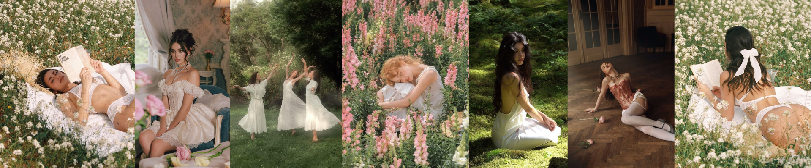

Diseñamos prendas que envuelven sin pesar, que respiran con el cuerpo pero lo sostienen. Piezas donde la rigidez y la fluidez conversan No somos hadas pequeñas. Somos lo que quedó cuando a las diosas las obligaron a esconderse. Nuestra estética nace del cruce: de la lencería y la armadura, de la fluidez y la estructura, de lo etéreo y lo firme. Tomamos la imagen de la hada luminosa, sensual y la devolvemos a su origen: las guerreras celtas, hijas de Danu, las ninfas que custodiaban ríos y bosques con voluntad propia.No eran frágiles. Eran territoriales. Conscientes. Indomables. Donde la estructura protege y la transparencia revela. La sensualidad aquí no es espectáculo. Es decisión. Es presencia. Es una forma de habitar el cuerpo como territorio propio. Creemos en una mujer que puede revelar piel sin ceder poder. Que entiende la estructura como elección, no como imposición. Que se viste como quien entra en un ritual cotidiano: con intención. Es moda como territorio simbólico. Es el derecho a mostrarse sin ceder fuerza. Porque las hadas nunca fueron pequeñas. Aprendimos a reducirlas. Nosotras no

Feérica nace de la palabra feérico: aquello relacionado con las hadas, lo mágico y lo sobrenatural. Pero al convertirla en femenino, la marca también se convierte en una postura. Feérica habla de la mujer y de cómo históricamente todo aquello asociado a lo femenino ha sido reducido, suavizado o despojado de poder. Las primeras historias sobre hadas y ninfas no hablaban de criaturas pequeñas e indefensas. Eran seres ligados a la naturaleza, a la guerra, a la protección de territorios y al conocimiento; figuras casi divinas, poderosas e indomables. Con el tiempo y especialmente desde visiones religiosas y sociales más conservadoras estas figuras fueron transformadas en imágenes delicadas, sumisas y decorativas, más fáciles de controlar y consumir. Feérica retoma ese origen olvidado. La marca se inspira en esas mujeres míticas fuertes, libres y complejas para cuestionar la forma en que todavía hoy se percibe el cuerpo femenino. Porque muchas veces, cuando una mujer decide mostrar piel, sensualidad o libertad, automáticamente se le resta fuerza, inteligencia o autoridad.